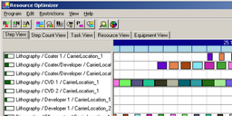

Hi, my name is Enrico.
I am an open-minded and curious software engineer.
My goal is to help people to work with complex machines in an easy and beautiful way.
+49 172 3264150 | contact@ehuettig42.deI solve problems
The trick is to break big problems down into smaller pieces until I find a solution for every piece. Then I prioritize all the little problems and solve them one by one.
I can listen
It‘s not always easy to articulate ideas or thoughts. But it‘s important to understand the stakeholder‘s needs and also listen to feedback during the design and development iterations.
I am involved
Work is more than just doing the things I am supposed to do. Currently I support the HR department and interview job candidates about their technical skills. I give on-the-job training to new coworkers and train customers.
Education and Skills
Study of physics at the Technical University of Dresden from 1991 to 1997, specialization in semiconductor physics and optics
Factory Automation Testing SEMI Standards UI Design Agile Development C# Tool Automation C++ Visual Studio Adobe XD UI Design Usability Engineering Requirements Engineering Conflict Management
Work Samples
Resource Planning & Management
Anwendung zur Produktionsplanung und -optimierung, Vorausberechnung von Resourcenbelegung, Auswertung nach verschiedenen Aspekten
Erweiterung der Produktpalette, Einführung von C# als moderne Programmiersprache
eigenständiges Projekt, Entwurfsmustern und Unit-Tests, Performance-Analyse und -Optimierung
Manufacturing Execution System
Anwendung zur Produktionsplanung und -optimierung, Vorausberechnung von Resourcenbelegung, Auswertung nach verschiedenen Aspekten
Erweiterung der Produktpalette, Einführung von C# als moderne Programmiersprache
eigenständiges Projekt, Entwurfsmustern und Unit-Tests, Performance-Analyse und -Optimierung
Maschinensteuerung
Anwendung zur Produktionsplanung und -optimierung, Vorausberechnung von Resourcenbelegung, Auswertung nach verschiedenen Aspekten
Erweiterung der Produktpalette, Einführung von C# als moderne Programmiersprache
eigenständiges Projekt, Entwurfsmustern und Unit-Tests, Performance-Analyse und -Optimierung